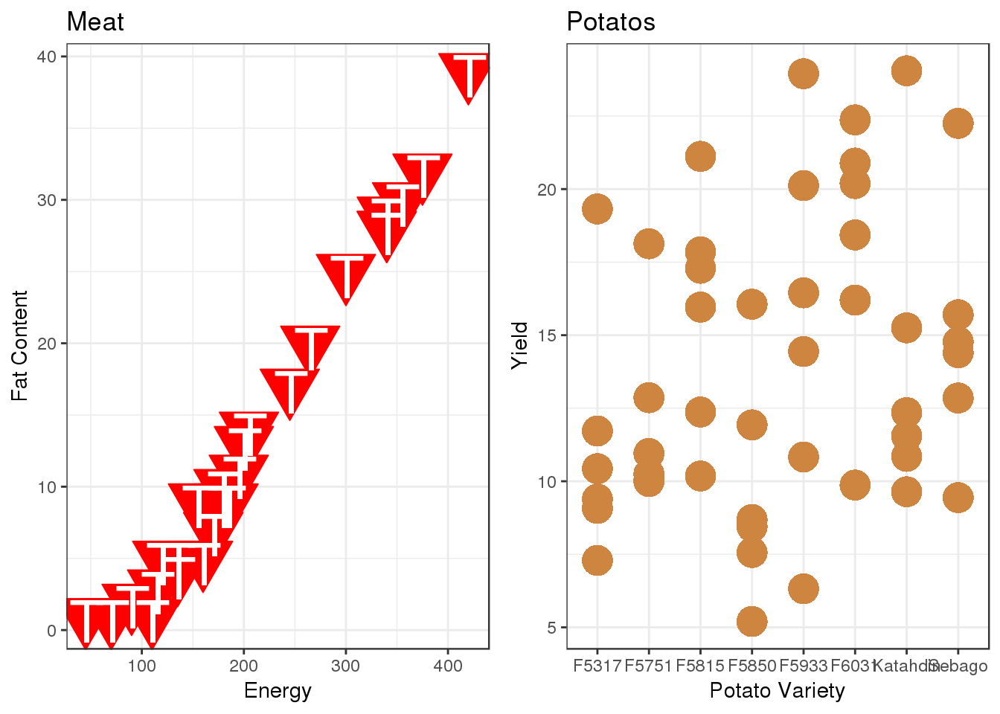
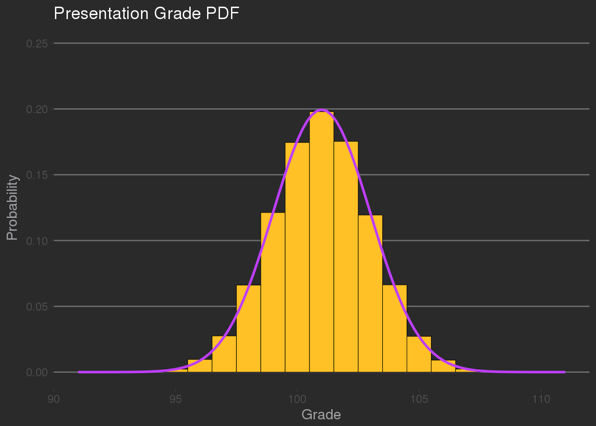
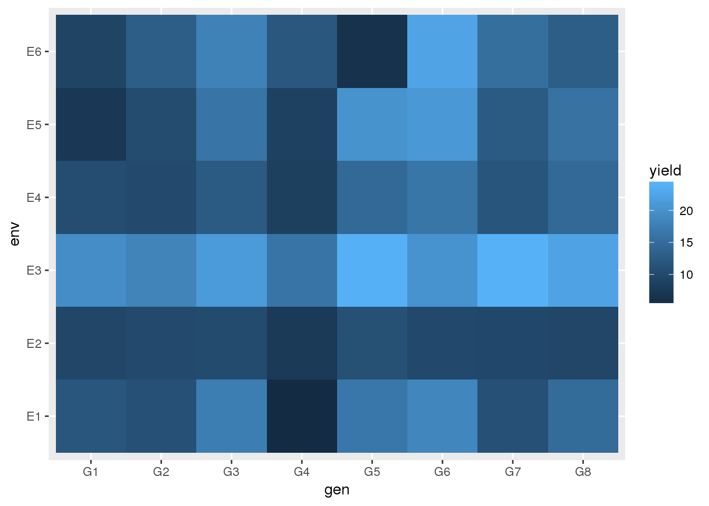
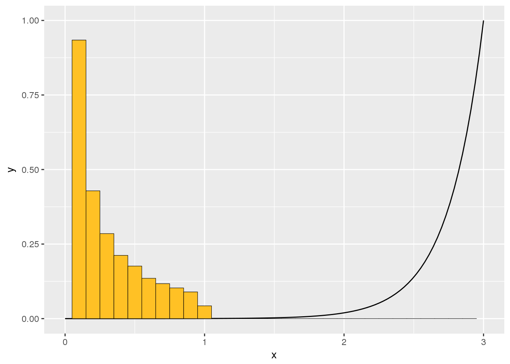

library(datasets)
library(agridat)
library(cluster.datasets)
library(ggplot2)
library(ggthemes)
library(png)
library(grid)
library(gridExtra)data("nutrients.meat.fish.fowl.1959")
str(nutrients.meat.fish.fowl.1959)## 'data.frame': 27 obs. of 6 variables:
## $ name : chr "Braised beef" "Hamburger" "Roast beef" "Beefsteak" ...
## $ energy : num 340 245 420 375 180 115 170 160 265 300 ...
## $ protein: num 20 21 15 19 22 20 25 26 20 18 ...
## $ fat : num 28 17 39 32 10 3 7 5 20 25 ...
## $ calcium: num 9 9 7 9 17 8 12 14 9 9 ...
## $ iron : num 2.6 2.7 2 2.6 3.7 1.4 1.5 5.9 2.6 2.3 ...data("tai.potato")
str(tai.potato)## 'data.frame': 48 obs. of 6 variables:
## $ yield : num 11.72 9.39 19.32 10.43 7.29 ...
## $ gen : Factor w/ 8 levels "G1","G2","G3",..: 1 1 1 1 1 1 2 2 2 2 ...
## $ variety: Factor w/ 8 levels "F5317","F5751",..: 1 1 1 1 1 1 2 2 2 2 ...
## $ env : Factor w/ 6 levels "E1","E2","E3",..: 1 2 3 4 5 6 1 2 3 4 ...
## $ loc : Factor w/ 3 levels "NB","NS","PEI": 1 1 2 2 3 3 1 1 2 2 ...
## $ year : int 65 66 65 66 65 66 65 66 65 66 ...data("nutrients.meat.fish.fowl.1959")
meat <- ggplot(nutrients.meat.fish.fowl.1959, aes(x = energy, y = fat)) +
geom_point(size = 10, col = "red", shape = 25, fill = "red") +
geom_point(data = nutrients.meat.fish.fowl.1959, aes(x = energy + 1.5, y = fat - .4),
size = 10, col = "white", shape = 84)+
labs(x = "Energy", y = "Fat Content", title = "Meat") +
theme_bw()
data("tai.potato")
potato <- ggplot(tai.potato, aes(x = variety, y = yield)) +
geom_point(size = 7, col = "tan3", shape = 16) +
labs(x = "Potato Variety", y = "Yield", title = "Potatos") +
theme_bw()
grid.arrange(meat, potato, ncol=2)
n <- 100000
mean <- 101
sd <- 2
binwidth = 1
set.seed(1010101)
df <- data.frame(x = rnorm(n, mean, sd))
ggplot(df, aes(x = x, mean = mean, sd = sd, binwidth = binwidth, n = n)) +
geom_histogram(aes(y=..density..), position = "dodge",binwidth = binwidth,
color = "black", fill = "goldenrod1", size = 0.2) +
stat_function(fun = function(x) dnorm(x, mean = mean, sd = sd) * binwidth,
color = "darkorchid1", size = 1) +
scale_x_continuous(limits=c(91,111)) +
scale_y_continuous(limits=c(0,.25)) +
labs(title = "Presentation Grade PDF", x = "Grade", y = "Probability") +
theme_hc(bgcolor = "darkunica") +
scale_color_hc("darkunica")
void <- data.frame(x = c(0,3))
p1 <- ggplot(data.frame(x = void), aes(x = x)) +
xlim(0,3) +
ylim(0,2) +
geom_rect(xmin = 0, xmax = 3, ymin = 0, ymax = 1, color = "black", fill = "cyan3", alpha = .25) +
labs(title = "Number of Presentations", x = "Time (minutes)", y = "Presentations") +
theme_bw()
df <- data.frame(x = c(rnorm(10000, 2.7, .25), rnorm(10000, 2.7, .2)))
p2 <- ggplot(df, aes(x)) +
stat_ecdf(geom = "step", na.rm = TRUE) +
xlim(0,3) +
labs(title = "Probability of Applause", x = "Time (minutes)", y = "Probability") +
theme_bw()
xt <- c()
xt[1] <- 18
for (i in 2:30){
xt[i] <- xt[i-1] + rnorm(1,-.6,.5)
}
dt <- data.frame(y = xt, x = seq(.1,3,.1))
p3 <- ggplot(dt, aes(x = x, y = y)) +
geom_line() +
labs(title = "Classmate Attention vs. Time", x = "Time (minutes)", y = "Attention (yawns)") +
theme_bw()
#p4 <-
#multiplot(p1, p2, p3, p4, cols=2)ggplot(tai.potato, aes(x = gen, y = env, fill = yield)) +
geom_tile()
binwidth <- .1
thingy <- function(x){(((exp(1))^(4*x))/(exp(1)^(x*.1)+1))/69261.52}
df <- data.frame(x = thingy(runif(100000,0,3)))
ggplot(df, aes(x = x)) +
stat_function(fun = thingy) +
geom_histogram(aes(y=..density..), position = "dodge", binwidth = binwidth,
color = "black", fill = "goldenrod1", size = 0.2) +
xlim(0,3) +
ylim(0,1)## Warning: Removed 1 rows containing missing values (geom_bar).
This text should be at the bottom of every page